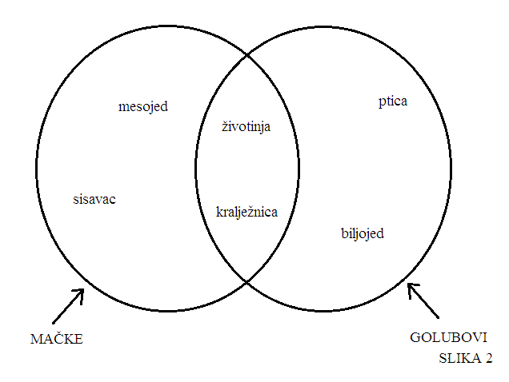

Pojam
Što je pojam?
Pojam je opće obilježje. *
Ovo je definicija iz udžbenika prof. Srećka Kovača, no što ona uopće znači? Svaki predmet ima neka obilježja koja mu pripadaju i po kojima se razlikuje od drugih predmeta. U ovom smislu, predmet je sve o čemu se može govoriti (pa čak i stvari koje možda i ne postoje, kao što su vile, jednorozi i slično). Tako se primjerice, golub razlikuje se od pojma mačke po nekim obilježjima, kao što su: ptica, biljojed i tako dalje te zbog toga svaki od ta dva predmeta označavamo različitim pojmovima, a to su pojmovi "golub" i "mačka". Mogli bismo reći kako na neki način "prišivamo" pojmove postojećim i nepostojećim predmetima.
Pogledajmo primjer:

Iz tog primjera vidimo kako neki pojmovi mogu imati neka zajednička obilježja. Neki pojmovi nemaju nikakvih zajedničkih obilježja. Jednako tako je važno naglasiti kako iako neki pojmovi mogu imati neka zajednička obilježja, oni su po svom ukupnom sadržaju ipak različiti. Također primjetite kako svako obilježje gore navedenih pojmova u stvari može i samo biti pojam. Tako i pojmovi "sisavac", "ptica" i ostali imaju svoja, zasebna obilježja.
Vrlo je važno naglasiti kako se svaki pojam sastoji samo od nužnih (od njega neodvojivih) obilježja. Tako primjerice "dvije noge" ne bi mogle biti obilježje pojma "golub", jer je moguće da postoji golub koji je izgubio jednu nogu u napadu neke mačke, no bez obzira na to što je izgubio jednu nogu, nije zbog toga prestao biti golub.